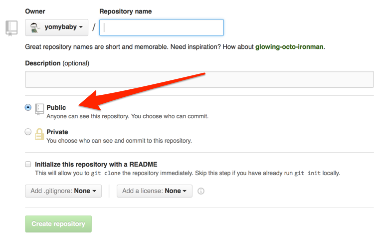

으로 살펴보는
오픈소스 개발 문화
Yo Studio
이종은
2015.09.18.
이종은
- Yo Studio
- JavaScript
- Titanium (tidev.kr / NIPA open frontier)
여러분과 나누고 싶은 것..
- github
- 오픈소스 개발 문화
이야기에 앞서..


으로 살펴보는
오픈소스 개발 문화
파일과 함께하는 일상
일상 업무
긴급 상황 발생
Q. 대비책이 있나요?

인간은 OO을 사용하는 동물
도구
파일 관리 도구의 탄생
도구의 구분
Revision History Tracker :
google 문서의 '업데이트 기록보기', 워드프레스 '리비전'
Revision Control Software :
Git, SVN, Perforce, Mecurial, CVS...

둘의 차이가 뭐죠?
왜 사용하나요?
- 무언가 잘못되었을 때 복구를 돕기 위해
- 프로젝트 진행 중 과거의 어떤 시점으로 돌아갈 수 있게 하기 위해
- 여러사람이 작업할 때 쉽게 합치기 위해
- 누가 어떤 부분을 수정했는지 추적하기 위해
- 안전하고 자유롭게 작업하기 위해
git-scm.com

SCM?
Source Code Management
Source Code?
네! 개발자를 위한 도구입니다.
리누스 토발즈

git 그리고 github
==
왜 좋은가?
- 빠르다
- 안전하다
- 자유롭다
빠르고 안전하고 자유로운 이유 1.
거의 모든 동작은
내 컴퓨터(Local)에서 동작한다.
빠르고 안전하고 자유로운 이유 2.
분산버전 관리 시스템

빠르고 안전하고 자유로운 이유 3.
은 당신이 한 거의 모든 일을
알고 있다.
github는 왜 성장 했을까?

feeds, follow, star, wiki, social network graph

도구가 개발 문화에 끼친 영향?
어떤 도구를 채택하면
그 안에 내재된 운영철학도 함께 받아들이게 된다
Cooperation without Coordination
Permission Culture
Open Culture
Github는 기본이 Open
Github 들여다보기
Fork
누구나 소스를 볼 수 있으며 내
저장소에 fork해서 수정할 수 있다.
Pull request
누구나 반영을 요청을 할 수 있고
그것은 함께 공개적으로 논의 된다.
diff
차이점을 쉽게 비교할 수 있다.
link, mention
모두 연결할 수 있다.
실제 예

정리해보자면
- 공개하고
- 수정하고
- 요청하고
- 논의하고
- 반영하는
이 모든 과정이
Open Access
오픈하면
얻을 수 있어요
- 버그 찾기
- 아이디어와 해결책
"보고 있는 눈이 충분히 많으면
찾지 못할 버그는 없다"
빠른 발전, 짧아져가는 생명주기
오픈하지 않으면...
아끼다
똥된다
💩
당신의 쥐고 있는 그것은?
안녕할까요?
💩
한가지만 더..
우리나라 개발문화는?
왜?
"감사"로 시작하는 해외 개발자의 피드백과 "불평"으로 시작하는 한국 개발자의 피드백. 이 작은(?)차이가 소스 공개에 대해 망설이게 만들거나 공개한 일을 후회하게 만드는 것 같다. 이것이 오픈소스와 개발커뮤니티 활동을 방해한다.
— Jong Eun Lee (@yomybaby) September 17, 2015